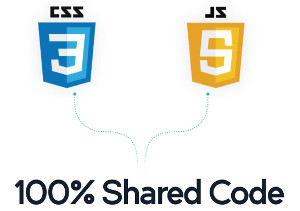

Build Mobile apps with Dockrized NativeScript

NativeScript is an interesting way to build Android and iOS apps using Javascript.
Let's look at some alternatives:
- Phonegap uses the DOM. NativeScript uses native UI controls.
- Xamarin and Titanium compile C# and JavaScript to Objective-C and Java respectively. In NativeScript the JavaScript you write is running on your phone.
- React Native only compiles to iOS (at the moment) and doesn't provide direct access to the native API.
Here is an example using the native Android API:
var file = new java.io.File(path);
NativeScript uses the V8 (and Webkit for iOS and Windows) which injects a few global objects. In the above example, java.io.File is one of them. In order to access Java objects, NativeScript uses something called Android JNI which provides a bridge between C++ and Java.
file then becomes a proxy object that points to a Java Object.
Is there any performance penalty here? Indeed, but it's only %10 precent slower than native applications.
Two more interesting points about NativeScript:
- NPM and CommonJS friendly - if you use Node.js you will feel at home.
- CSS for styling - you can use regular CSS syntax for styling your UI.
I wanted to explore NativeScript but didn't want to install and configure Java, Android SDK, Ant, etc. Life is too short so I created a Docker container with everything needed to run it.
Try it and let me know what you think!